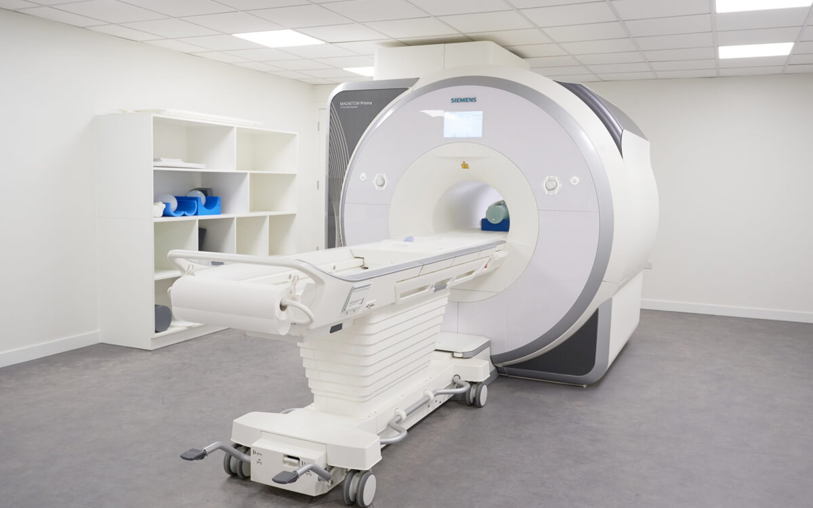

Working with MRI Data - Files and Formats¶
MRI Image Fundamentals
When you acquire an MRI image of the brain, in most cases it is either a 3D image i.e., a volume acquired at one single timepoint (e.g., T1-weighted, FLAIR scans) or a 4D multi-volume image acquired as a timeseries (e.g., fMRI scans). Each 3D volume consists of multiple 2D slices, which are individual images.
The volume consists of 3D voxels, with a typical size between 0.25 to 4mm, but not necessarily same in all three directions. For example, you can have voxel size [1mm x 1mm x 1mm] or [0.5mm x 0.5mm x 2mm]. The voxel size represents image resolution.
The final important feature of an MRI image is field of view (FOV), a matrix of voxels represented as the voxel size multiplied by number of voxels. It provides information about the coverage of the brain in your MRI image. The FOV is sometime provided for the entire 3D volume or the individual 2D slice. Sometimes, the FOV is defined based on slice thickness and number of acquired slices.
Image and standard space
When you acquire MRI images of the brain, you will find that these images will be different in terms of head position, image resolution and FOV, depending on the sequence and data type (e.g., T1 anatomical, diffusion MRI, fMRI). We often use term “image space” to depict these differences i.e., structural (T1), diffusion or functional space.
In addition, we also use term "standard space" to represent standard dimensions and coordinates of the template brain, which are used when reporting results of group analyses. Our brains differ in terms of size and shape and thus for the purpose of our analyses (both single-subject and group-level) we need to use standard space. The most common brain template is the MNI152 brain (an average of 152 healthy brains).
The process of alignment between different image spaces is called registration or normalization, and its purpose is to make sure that voxel and anatomical locations correspond to the same parts of the brain for each image type and/or participant.
MRI Data Formats¶
MRI scanners collect MRI data in an internal format that is unique to the scanner manufacturer, e.g., Philips, Siemens or GE. The manufacturer then allows you to export the data into a more usable intermediate format. We often refer to this intermediate format as raw data as it is not directly usable and needs to be converted before being accessible to most neuroimaging software packages.
The most common format used by various scanner manufacturers is the DICOM format. DICOM images corresponding to a single scan (e.g., a T1-weighted scan) might be one large file or multiple files (1 per each volume or one per each slice acquired). This will depend on the scanner and data server used to retrieve/export data from the scanner. There are other data formats e.g., PAR/REC that are specific to Philips scanners. The raw data needs to be converted into a format that the analysis packages can use.
Retrieving MRI data at the CHBH
At CHBH we have a Siemens 3T PRISMA scanner. When you acquire MRI scans at CHBH, data is pushed directly to a data server in the DICOM format. This should be automatic for all research scans. In addition, for most scans, this data is also directly converted to NIfTI format. So, at the CHBH you will likely retrieve MRI data from the scanner in NIfTI format.

NIfTI (Neuroimaging Informatics Technology Initiative) is the most widely used format for MRI data, accessible by majority of the neuroimaging software packages e.g., FSL or SPM. Another older data format which is still sometimes used, is Analyze (with each image consisting of two files .img and .hdr).
NIfTI format files have either the extension .nii or .nii.gz (compressed .nii file), where there is only one NIfTI image file per scan. DICOM files usually have a suffix of .dcm, although these files might be additionally compressed with gzip as .dcm.gz files.
Working with MRI Data¶
We will now ourselves convert some DICOM images to NIfTI, using some data collected at the CHBH.
Servers do not always provide MRI data as NIfTIs
While at CHBH you can download the MRI data in NIfTI format, this might not be the case at some other neuroimaging centres. Thus, you should learn how to do it yourself.
The data is located in /rds/projects/c/chechlmy-chbh-mricn/module_data/CHBH.
First, log in into the BlueBEAR Portal and start a BlueBEAR GUI session (2 hours). Open a new terminal window and navigate to your MRICN project folder:
cd /rds/projects/c/chechlmy-chbh-mricn/xxx [where XXX=your ADF username]
Next copy the data from CHBH scanning sessions:
cp -r /rds/projects/c/chechlmy-chbh-mricn/module_data/CHBH .
pwd
After typing pwd, the terminal should show /rds/projects/c/chechlmy-chbh-mricn/xxx (i.e., you should be inside your MRICN project folder).
Then type:
cd CHBH
ls
You should see data from 3 scanning sessions. Note that there are two files per scan session. One is labelled XXX_dicom.zip. This contains the DICOM files of all data from the scan session. The other file is labelled XXX_nifti.zip. This contains the NIFTI files of the same data, converted from DICOM.
In general, both DICOM and NifTI data should be always copied from the server and saved by the researcher after each scan session. The DICOM file is needed in case there are problems with the automatic conversion to NIfTI. However, most of the time the only file you will need to work with is the XXX_nifti.zip file containing NIfTI versions of the data.
We will now unpack some of the data to explore the data structure. In your terminal, type:
unzip 20191008#C4E7_nifti.zip
cd 20191008#C4E7_nifti
ls
You should see six files listed as below, corresponding to 3 scans (two fMRI scans and one structural scan):
2.5mm_2000_fMRI_v1_6.json
2.5mm_2000_fMRI_v1_6.nii.gz
2.5mm_2000_fMRI_v1_7.json
2.5mm_2000_fMRI_v1_7.nii.gz
T1_vol_v1_5.json
T1_vol_v1_5.nii.gz
JSON files
You may have noticed that for each scan file (NifTI file, .nii.gz), there is also an autogenerated .json file. This is an information file (in an open standard format) that contains important information for our data analysis. For example, the 2.5mm_2000_fMRI_v1_6.json file contains slice timing information about the exact point in time during the 2s TR (repetition time) when each slice is acquired, which can be used later in the fMRI pre-processing. We will come back to this later in the course.
For now, let's look at another dataset. In your terminal type:
cd ..
unzip 20221206#C547_nifti.zip
cd 20221206#C547_nifti
ls
You should now see a list of 10 files, corresponding to 3 scans (two diffusion MRI scans and one structural scan). For each diffusion scan, in addition to the .nii.gz and .json files, there are two additional files, .bval and .bvec that contain important information about gradient strength and gradient directions (as mentioned in the MRI physics lecture). These two files are also needed for later analysis (of diffusion MRI data).
We will now look at a method for converting data from the DICOM format to NIfTI.
cd ..
unzip 20191008#C4E7_dicom.zip
cd 20191008#C4E7_dicom
ls
You should see a list of 7 sub-directories. Each top level DICOM directory contains sub-directories with each individual scan sequence. The structure of DICOM directories can vary depending on how it is stored/exported on different systems. The 7 sub-directories here contain data for four localizer scans/planning scans, two fMRI scans and one structural scan. Each sub-directory contains several .dcm files.
There are several software packages which can be used to convert DICOM to NIfTI, but dcm2niix is the most widely used. It is available as standalone software, or part of MRIcroGL a popular tool for brain visualization similar to FSLeyes. dcm2niix is available on BlueBEAR, but to use it you need to load it first using the terminal.
To do this, in the terminal type:
module load bear-apps/2022b
Wait for the apps to load and then type:
module load dcm2niix/1.0.20230411-GCCcore-12.2.0
To convert the .dcm files in one of the sub-directories to NIfTI using dcm2niix from terminal, type:
dcm2niix T1_vol_v1_5
If you now check the T1_vol_v1_5 sub-directory, you should find there a single .nii file and a .json file.
Converting more MRI data
Now try to convert to NIfTI the .dcm files from the scanning session 20221206#C547 with 3 DICOM sub-directories, the two diffusion scans diff_AP and diff_PA and one structural scan MPRAGE.
To do this, you will first need to change current directory, unzip, change directory again and then run the dcm2niix command as above.
If you have done it correctly you will find .nii and .json files generated in the structural sub-directories, and in the diffusion sub-directories you will also find .bval and .bvec files.
Now that we have our MRI data in the correct format, we will take a look at the brain images themselves using FSLeyes.